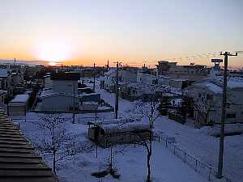
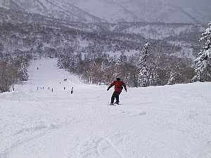

北海道スキー | ２００2年１月 |
|  千歳の朝 | 冬はやっぱスキーしなくっちゃ！ って、結構日帰りなので長野には行っているのだが、今回は「試される大地・北海道」行って来ました。 前回、北海道にスキーできたのは、「富良野スキー場」。今回は「キロロ」と「ルスツ」です。「キロロ」は、雪質バツグンという、ふれこみで決めました。 金曜の夜、仕事が終わったあとで羽田まで行き、最終の飛行機に飛び乗って千歳まで。千歳には友人が迎えに来てくれたので、ノープロブレム！しかし、北海道は寒い！−５℃だって。（友人いわく。今日はスゲー暖かい！） 左の写真は、千歳の夜明け。寒そうでしょう〜 |
土曜日の朝から、高速道路を使い小樽市の近郊 「キロロリゾート」 へ。 リフト券が高いな〜（４７００円ぐらいだったか。割引チケットも使えん）と、思いつつ、ちょっと並んでるゴンドラへ。山頂はさらに寒い。しかし、雪質は噂通りすばらしい。スキーで歩くたび、キュッ、キュッと鳴る。 途中、雪がちらつくも、降ってくる雪がすべて「雪印マーク」の結晶になっている。（う〜〜ん、最近じゃ「雪印マーク」って、ヤバイかも） 切り替わって、翌日（日）は、支笏湖の横をすり抜け、 「ルスツ」 へ。キロロもそうだけど、ルスツも地名であり、漢字がちゃんとあるんだよね。道路の標識に書いてあったりすると、暴走族のあて字みたいで、びっくり！留寿都（ルスツ）だって。ちなみに”村”が付きます。 |  キロロ |
 キロロ | ルスツは、リフトなどの輸送力を誇るだけあって、ゴンドラや高速クワッドがたくさん。雪質はキロロに劣るかもしれないが、良いとこです。あースノーモービルやりたかった。（ちょっと高いよ） その晩、泊まった宿がまた良かった。系列の「名水亭」の露天風呂がスゲー広い！感動ものです。泊まったとこは「ホロホロ山荘」。ここのお風呂も、でかい岩の「岩風呂」が良いです。カニ食って、ビール飲んで気持ちよく睡眠 (^o^) 「名水亭」 湯煙の向こうまでお風呂！ 「ホロホロ山荘」 温泉と言うところをクリック！ 翌日、夕方の飛行機まで時間があるので、途中の「キノコ王国」で、キノコ汁をすすり、試されている大地を眺めながら帰ってきました。 やっぱ、北海道いいです。今度は夏に行きたいね〜〜 |